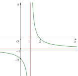
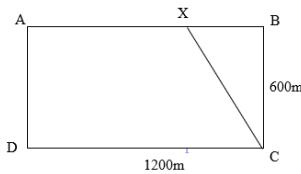
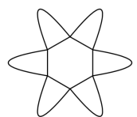

ĐỀ THI TOÁN - ĐỀ SỐ 41 HOT
Phần I: Trắc Nghiệm Nhiều Lựa Chọn
Tóm tắt kiến thức: Nguyên hàm
Nguyên hàm của \( f(x) = x^n \) là \( \int x^n dx = \frac{x^{n+1}}{n+1} + C \), với \( n \neq -1 \).
Câu 1:
Nguyên hàm của hàm số \( f(x) = x^3 \) là:
Chọn đáp án:
Lời giải:
\( \int x^3 dx = \frac{x^4}{4} + C \).
Đáp án: D.
Tóm tắt kiến thức: Thể tích khối tròn xoay
Thể tích khối tròn xoay quanh trục \( Ox \): \( V = \pi \int_a^b [f(x)]^2 dx \), với \( f(x) \) là hàm xác định vùng quay.
Câu 2:
Gọi \( D \) là hình phẳng giới hạn bởi các đường \( y = e^x \), \( y = 0 \), \( x = 0 \) và \( x = 1 \). Thể tích của khối tròn xoay tạo thành khi quay \( D \) quanh trục \( Ox \) bằng:
Chọn đáp án:
Lời giải:
Thể tích khối tròn xoay: \( V = \pi \int_0^1 (e^x)^2 dx = \pi \int_0^1 e^{2x} dx \).
Đáp án: A.
Tóm tắt kiến thức: Độ lệch chuẩn
Độ lệch chuẩn: \( s = \sqrt{s^2} \), với phương sai \( s^2 = \frac{1}{n} \sum f_i (x_i - \bar{x})^2 \), \( \bar{x} = \frac{\sum f_i x_i}{n} \).
Câu 3:
Cho mẫu số liệu ghép nhóm được cho ở bảng sau:
| Nhóm | \([25; 35)\) | \([35; 45)\) | \([45; 55)\) | \([65; 75)\) | \([75; 85)\) |
|---|---|---|---|---|---|
| Tần số | 9 | 7 | 5 | 10 | 9 |
Chọn đáp án:
Lời giải:
Giá trị đại diện: 30, 40, 50, 60, 70.
\( \bar{x} = \frac{9 \cdot 30 + 7 \cdot 40 + 5 \cdot 50 + 10 \cdot 60 + 9 \cdot 70}{40} = 50,75 \).
\( s^2 = \frac{9(30-50,75)^2 + 7(40-50,75)^2 + 5(50-50,75)^2 + 10(60-50,75)^2 + 9(70-50,75)^2}{40} \approx 221,9375 \).
\( s = \sqrt{221,9375} \approx 14,9 \).
Đáp án: D.
Tóm tắt kiến thức: Phương trình đường thẳng
Phương trình đường thẳng qua điểm \( A(x_0; y_0; z_0) \), vectơ chỉ phương \( \vec{u}(a; b; c) \): \( \frac{x-x_0}{a} = \frac{y-y_0}{b} = \frac{z-z_0}{c} \).
Câu 4:
Trong không gian \( Oxyz \), phương trình của đường thẳng đi qua \( A(-1; -1; 1) \) và có một vectơ chỉ phương \( \vec{u}(1; 2; 3) \) là:
Chọn đáp án:
Lời giải:
Đường thẳng qua \( A(-1; -1; 1) \), vectơ chỉ phương \( \vec{u}(1; 2; 3) \): \( \frac{x+1}{1} = \frac{y+1}{2} = \frac{z-1}{3} \).
Đáp án: C.
Tóm tắt kiến thức: Tiệm cận đứng
Tiệm cận đứng của hàm \( y = \frac{ax+b}{cx+d} \) tại \( x = -\frac{d}{c} \), khi mẫu số bằng 0 và \( ad - bc \neq 0 \).
Câu 5:
Cho hàm số \( y = \frac{ax+b}{cx+d} (c \neq 0, ad - bc \neq 0) \) có đồ thị như hình vẽ bên.

Tiệm cận đứng của đồ thị hàm số là:
Chọn đáp án:
Lời giải:
Từ đồ thị, tiệm cận đứng là \( x = 1 \).
Đáp án: C.
Tóm tắt kiến thức: Bất phương trình logarit
Bất phương trình \( \log_a f(x) < \log_a g(x) \) (với \( a > 1 \)) tương đương \( 0 < f(x) < g(x) \), kết hợp điều kiện \( f(x) > 0 \), \( g(x) > 0 \).
Câu 6:
Tập nghiệm của bất phương trình \( \log_5 (2x-1) < \log_5 (x+2) \) là:
Chọn đáp án:
Lời giải:
Điều kiện: \( 2x-1 > 0 \Rightarrow x > \frac{1}{2} \), \( x+2 > 0 \Rightarrow x > -2 \).
\( \log_5 (2x-1) < \log_5 (x+2) \Leftrightarrow 2x-1 < x+2 \Leftrightarrow x < 3 \).
Tập nghiệm: \( \frac{1}{2} < x < 3 \).
Đáp án: C.
Tóm tắt kiến thức: Vectơ pháp tuyến
Mặt phẳng \( ax + by + cz + d = 0 \) có vectơ pháp tuyến \( \vec{n} = (a; b; c) \) hoặc \( k\vec{n} \).
Câu 7:
Trong không gian \( Oxyz \), cho mặt phẳng \( (P): 2x - y + z - 3 = 0 \). Vectơ nào dưới đây là một vectơ pháp tuyến của mặt phẳng \( (P) \)?
Chọn đáp án:
Lời giải:
Mặt phẳng \( (P): 2x - y + z - 3 = 0 \) có vectơ pháp tuyến \( \vec{n} = (2; -1; 1) \).
\( \vec{n_1} = (-2; 1; -1) = -\vec{n} \), nên là vectơ pháp tuyến.
Đáp án: D.
Tóm tắt kiến thức: Vuông góc trong hình học không gian
Đường thẳng \( d \) vuông góc với mặt phẳng \( (P) \) nếu \( d \) vuông góc với hai đường thẳng giao nhau trong \( (P) \).
Câu 8:
Cho hình chóp \( S.ABCD \) có đáy \( ABCD \) là hình vuông và \( SA \perp (ABCD) \). Đường thẳng \( BC \) vuông góc với mặt phẳng nào sau đây?
Chọn đáp án:
Lời giải:
\( SA \perp (ABCD) \Rightarrow SA \perp BC \), \( SA \perp AB \). Trong mặt phẳng \( (SAB) \), \( BC \perp SA \), \( BC \perp AB \), nên \( BC \perp (SAB) \).
Đáp án: A.
Tóm tắt kiến thức: Phương trình logarit
Phương trình \( \log_a x = b \Rightarrow x = a^b \).
Câu 9:
Nghiệm phương trình \( \log_2 x = 3 \) là:
Chọn đáp án:
Lời giải:
\( \log_2 x = 3 \Leftrightarrow x = 2^3 = 8 \).
Đáp án: C.
Tóm tắt kiến thức: Cấp số cộng
Trong cấp số cộng, \( u_n = u_1 + (n-1)d \), công sai \( d = u_{n+1} - u_n \).
Câu 10:
Cho cấp số cộng \( (u_n) \) có \( u_2 = 3 \), \( u_3 = 5 \). Công sai \( d \) của cấp số cộng là:
Chọn đáp án:
Lời giải:
\( u_3 = u_2 + d \Rightarrow 5 = 3 + d \Rightarrow d = 2 \).
Đáp án: B.
Tóm tắt kiến thức: Vectơ trong hình học không gian
Trong hình hộp, các đẳng thức vectơ được kiểm tra bằng cách phân tích tọa độ hoặc quan hệ hình học.
Câu 11:
Cho hình hộp \( ABCD.A'B'C'D' \). Khẳng định nào sai trong các khẳng định sau:
Chọn đáp án:
Lời giải:
Kiểm tra từng khẳng định:
A. \( \overrightarrow{BA} + \overrightarrow{BC} + \overrightarrow{BB'} = -\overrightarrow{AB} + \overrightarrow{BC} + \overrightarrow{BB'} = \overrightarrow{AC} + \overrightarrow{BB'} = \overrightarrow{BD'} \). Đúng.
B. \( \overrightarrow{AB} + \overrightarrow{AD} + \overrightarrow{AA'} = \overrightarrow{AC'} \). Đúng.
C. \( \overrightarrow{AB} + \overrightarrow{BC} + \overrightarrow{CC'} = \overrightarrow{AC} + \overrightarrow{CC'} = \overrightarrow{AC'} \). Đúng.
D. \( \overrightarrow{AB} + \overrightarrow{AA'} \neq \overrightarrow{AD} + \overrightarrow{DD'} \). Sai.
Đáp án: D.
Tóm tắt kiến thức: Tính đơn điệu
Hàm số nghịch biến trên khoảng mà \( f'(x) < 0 \). Sử dụng bảng xét dấu đạo hàm để xác định.
Câu 12:
Cho hàm số có bảng xét dấu như sau:

| \( x \) | \(-\infty\) | \(-1\) | \(+\infty\) |
|---|---|---|---|
| \( f'(x) \) | \(- \) | 0 | \(+ \) |
Chọn đáp án:
Lời giải:
Từ bảng xét dấu, \( f'(x) < 0 \) trên \( (-\infty; -1) \), nên hàm số nghịch biến trên \( (-\infty; -1) \).
Đáp án: A.
Phần II: Trắc Nghiệm Đúng/Sai
Tóm tắt kiến thức: Phương trình vi phân
Phương trình \( V'(t) = k S(t) \), với \( S(t) \) là diện tích bề mặt, có thể giải bằng cách liên hệ \( V(t) \) và \( r(t) \).
Câu 13:
Một viên muối hình cầu có đường kính \( 8 \) cm đang tan trong nước với tốc độ giảm thể tích tại bất kỳ thời điểm nào tỉ lệ thuận với diện tích bề mặt quả cầu tại thời điểm đó. Sau 30 giây thì thể tích giảm còn một nửa. Xét các phát biểu sau:
Chọn đáp án cho từng phát biểu:
a)
b)
c)
d)
Lời giải:
a) Đúng. \( V(t) = \frac{4}{3} \pi r^3(t) \).
b) Đúng. Diện tích bề mặt \( S(t) = 4 \pi r^2(t) \), tốc độ giảm \( V'(t) = k \pi r^2(t) \).
c) Sai. \( V'(t) = 4 \pi r^2(t) r'(t) = k \pi r^2(t) \Rightarrow r'(t) = \frac{k}{4} \). Với \( r(0) = 4 \), \( V\left(\frac{1}{2}\right) = \frac{128 \pi}{3} \), suy ra \( k \approx -6,6 \).
d) Sai. \( r\left(\frac{3}{4}\right) = \frac{(8 \sqrt[3]{32} - 32) \cdot \frac{3}{4}}{4} + 4 \), \( V\left(\frac{3}{4}\right) \approx 88,28 \) cm\(^3 \).
Đáp án: a) Đúng, b) Đúng, c) Sai, d) Sai.
Tóm tắt kiến thức: Chuyển động thẳng
Quãng đường \( S(t) = \int v(t) dt \), vận tốc \( v(t) \) là đạo hàm của gia tốc.
Câu 14:
Một chất điểm \( A \) xuất phát từ \( O \), chuyển động thẳng với vận tốc biến thiên theo thời gian bởi quy luật \( v(t) = \frac{1}{100} t^2 + \frac{13}{30} t \) (m/s). Từ trạng thái nghỉ, chất điểm \( B \) cũng xuất phát từ \( O \), chuyển động thẳng cùng hướng với \( A \) nhưng chậm hơn 10 giây và có gia tốc \( a \) (m/s\(^2\)). Sau khi \( B \) xuất phát được 15 giây thì đuổi kịp \( A \). Xét các phát biểu sau:
Chọn đáp án cho từng phát biểu:
a)
b)
c)
d)
Lời giải:
a) Đúng. \( v_B(t) = \int a dt = a t \).
b) Đúng. \( S_A = \int_0^{25} \left( \frac{1}{100} t^2 + \frac{13}{30} t \right) dt = \frac{375}{2} \).
c) Đúng. \( S_B = \int_0^{15} a t dt = \frac{225 a}{2} \).
d) Đúng. \( \frac{375}{2} = \frac{225 a}{2} \Rightarrow a = \frac{5}{3} \). \( v_B(15) = \frac{5}{3} \cdot 15 = 25 \).
Đáp án: a) Đúng, b) Đúng, c) Đúng, d) Đúng.
Tóm tắt kiến thức: Mặt cầu và mặt phẳng
Mặt cầu \( x^2 + y^2 + z^2 + 2ax + 2by + 2cz + d = 0 \) có tâm \( (-a; -b; -c) \), bán kính \( R = \sqrt{a^2 + b^2 + c^2 - d} \). Khoảng cách từ tâm đến mặt phẳng xác định giao tuyến.
Câu 15:
Trong không gian \( Oxyz \), cho mặt cầu \( (S): x^2 + y^2 + z^2 - 6x + 4y - 2z + 5 = 0 \). Phương trình mặt phẳng \( (Q) \) chứa trục \( Ox \) và cắt \( (S) \) theo giao tuyến là một đường tròn có bán kính bằng 2. Xét các phát biểu sau:
Chọn đáp án cho từng phát biểu:
a)
b)
c)
d)
Lời giải:
a) Sai. Tâm \( I(3; -2; 1) \), \( R = \sqrt{3^2 + (-2)^2 + 1^2 - 5} = 3 \).
b) Sai. \( OI = \sqrt{3^2 + (-2)^2 + 1^2} = \sqrt{14} > 3 \), nên \( O \) nằm ngoài mặt cầu.
c) Sai. \( R^2 = r^2 + d^2 \Rightarrow d = \sqrt{3^2 - 2^2} = \sqrt{5} \neq 1 \).
d) Đúng. Mặt phẳng \( (Q) \): \( 2y - z = 0 \), thỏa mãn điều kiện chứa trục \( Ox \) và khoảng cách \( d = \sqrt{5} \).
Đáp án: a) Sai, b) Sai, c) Sai, d) Đúng.
Tóm tắt kiến thức: Xác suất có điều kiện
Xác suất có điều kiện: \( P(A|B) = \frac{P(A \cap B)}{P(B)} \). Xác suất toàn phần: \( P(B) = \sum P(A_i) P P(B|A_i) \).
Câu 16:
Câu 16:
Một tờ tiền giả lần lượt bị hai người \( A \) và \( B \) kiểm tra. Xác suất để người \( A \) phát hiện tờ tiền giả là 0,7. Nếu người \( A \) cho rằng tờ tiền giả, xác suất để người \( B \) cũng nhận định như thế là 0,4. Xét các phát biểu sau:
Chọn đáp án cho từng phát biểu:
a)
b)
c)
d)
Lời giải:
a) Sai. \( P(\bar{A}) = 1 - P(A) = 1 - 0,7 = 0,3 \neq 0,2 \).
b) Đúng. \( P(\bar{A} \cap \bar{B}) = P(\bar{A}) \cdot P(\bar{B}|\bar{A}) = 0,3 \cdot 0,4 = 0,12 \).
c) Đúng. \( P(A \cup B) = 1 - P(\bar{A} \cap \bar{B}) = 1 - 0,12 = 0,88 \).
d) Đúng. \( P(A | A \cup B) = \frac{P(A)}{P(A \cup B)} = \frac{0,7}{0,88} \approx 0,795 = 79,5\% \).
Đáp án: a) Sai, b) Đúng, c) Đúng, d) Đúng.
Phần III: Trắc Nghiệm Trả Lời Ngắn
Tóm tắt kiến thức: Góc phẳng nhị diện
Góc phẳng nhị diện được xác định bởi góc giữa hai đường thẳng thuộc hai mặt phẳng, tính bằng cosin.
Câu 17:
Cho hình chóp \( S.ABC \) có \( ABC \), \( SAB \) là các tam giác đều và mặt bên \( (SAB) \) vuông góc với mặt đáy. Gọi \( \alpha \) là góc phẳng nhị diện \( [S, BC, A] \). Tính \( \cos^2 \alpha \).
Nhập đáp án:
Lời giải:
Gọi \( H \) là trung điểm \( AB \), \( SH \perp AB \), \( SH \perp (ABC) \Rightarrow SH \perp BC \). Kẻ \( HI \perp BC \), góc nhị diện là \( \angle SIH \).
\( SH = \frac{AB \sqrt{3}}{2} \), \( HI = \frac{AB \sqrt{3}}{4} \). \( \cos \alpha = \frac{HI}{SH} = \frac{\sqrt{3}/4}{\sqrt{3}/2} = \frac{1}{2} \Rightarrow \cos^2 \alpha = 0,2 \).
Đáp án: 0,2.
Tóm tắt kiến thức: Hệ phương trình
Giải hệ phương trình tuyến tính để tìm số lượng ban đầu của các loại cây.
Câu 18:
Trong một vườn cây ăn trái, có ba loại cây: cây cam, cây chanh và cây bưởi. Sau 3 năm, số cây cam tăng gấp ba lần, số cây chanh tăng gấp hai lần và cây bưởi tăng gấp bốn lần số lượng cây ban đầu. Tổng số cây sau 3 năm là 330 cây. Biết rằng ban đầu số lượng cây bưởi bằng trung bình cộng của số lượng cây cam và cây chanh. Sau 3 năm thu hoạch, tổng số cây cam và cây chanh tăng thêm nhiều hơn 15 cây so với số cây bưởi tăng thêm. Tổng số cây cam và cây bưởi ban đầu là bao nhiêu?
Nhập đáp án:
Lời giải:
Gọi số cây cam, chanh, bưởi là \( x, y, z \).
Hệ phương trình: \( 3x + 2y + 4z = 330 \), \( x + y - 2z = 0 \), \( 2x + y - 3z = 15 \).
Giải được: \( x = 50 \), \( y = 20 \), \( z = 35 \).
Tổng cây cam và bưởi: \( 50 + 35 = 85 \).
Đáp án: 85.
Tóm tắt kiến thức: Tối ưu hóa
Tìm cực trị của hàm thời gian bằng cách lấy đạo hàm và giải phương trình \( f'(x) = 0 \).
Câu 19:
Một vận động viên thể thao hai môn phối hợp luyện tập với một bể bơi hình chữ nhật dài 1200 m, rộng 600 m. Vận động viên chạy phối hợp với bơi như sau: Xuất phát từ điểm \( A \), chạy đến điểm \( X \) và bơi từ điểm \( X \) đến điểm \( C \).

Hỏi nên chọn điểm \( X \) cách \( A \) bao nhiêu mét để vận động viên đến \( C \) nhanh nhất (làm tròn kết quả đến hàng đơn vị)? Biết rằng vận tốc chạy là 30 km/h, vận tốc bơi là 6 km/h.
Nhập đáp án:
Lời giải:
Đặt \( BX = x \) km, \( AX = 1,2 - x \), \( XC = \sqrt{0,36 + x^2} \).
Thời gian: \( T(x) = \frac{1,2 - x}{30} + \frac{\sqrt{0,36 + x^2}}{6} \).
\( T'(x) = \frac{1}{30} \left( -1 + \frac{5x}{\sqrt{0,36 + x^2}} \right) = 0 \Rightarrow x = \frac{\sqrt{6}}{20} \).
\( AX = 1,2 - \frac{\sqrt{6}}{20} \approx 1,077 \) km = 1077 m.
Đáp án: 1077.
Tóm tắt kiến thức: Tối ưu hóa đường gấp khúc
Độ dài đường gấp khúc ngắn nhất khi các điểm thẳng hàng trên mặt phẳng chiếu.
Câu 20:
Trong không gian \( Oxyz \), cho hai điểm \( A(5; 0; 6) \) và \( B(3; 5; 0) \). Điểm \( M \) di động trên trục \( Oz \), điểm \( N \) di động trên trục \( Oy \). Độ dài đường gấp khúc \( AMNB \) có độ dài nhỏ nhất bằng bao nhiêu? (Kết quả làm tròn đến hàng phần mười).
Nhập đáp án:
Lời giải:
Chiếu \( A(5; 0; 6) \to A'(0; -5; 6) \), \( B(3; 5; 0) \to B'(0; 5; -3) \).
Đường gấp khúc \( AMNB = A'M + MN + NB' \) nhỏ nhất khi \( A', M, N, B' \) thẳng hàng.
Độ dài: \( A'B' = \sqrt{10^2 + (-9)^2} \approx 13,5 \).
Đáp án: 13,5.
Tóm tắt kiến thức: Diện tích
Diện tích hình lục giác đều: \( S = \frac{3 \sqrt{3}}{2} a^2 \). Diện tích parabol tính bằng tích phân.
Câu 21:
Để trang trí cho một phòng trong tòa nhà, người ta vẽ lên tường một hình như sau: trên mỗi cạnh của hình lục giác đều có cạnh bằng 2 dm có một cánh hoa hình parabol, đỉnh của parabol cách cạnh 3 dm và nằm phía ngoài hình lục giác, đường parabol đi qua hai đầu mút của mỗi cạnh.

Tính diện tích của hình (kể cả hình lục giác đều) để mua sơn trang trí cho phù hợp (kết quả làm tròn đến chữ số thập phân thứ nhất).
Nhập đáp án:
Lời giải:
Diện tích lục giác: \( S = \frac{3 \sqrt{3}}{2} \cdot 2^2 = 6 \sqrt{3} \).
Parabol qua \( A(1; 0) \), \( B(-1; 0) \), đỉnh \( I(0; 3) \): \( y = -3x^2 + 3 \).
Diện tích cánh hoa: \( \int_{-1}^1 (-3x^2 + 3) dx = 4 \).
Tổng diện tích: \( 6 \sqrt{3} + 6 \cdot 4 \approx 34,4 \) dm\(^2\).
Đáp án: 34,4.
Tóm tắt kiến thức: Xác suất toàn phần
Xác suất toàn phần: \( P(A) = \sum P(H_i) \cdot P(A|H_i) \).
Câu 22:
Có hai lô hàng. Lô 1: 7 chính phẩm, 3 phế phẩm. Lô 2: 8 chính phẩm, 2 phế phẩm. Từ lô 1 lấy ra 2 sản phẩm, từ lô 2 lấy ra 3 sản phẩm, rồi trong số sản phẩm lấy được, lấy tiếp ngẫu nhiên 2 sản phẩm. Tính xác suất để trong 2 sản phẩm đó có ít nhất một chính phẩm (kết quả làm tròn đến hàng phần trăm).
Nhập đáp án:
Lời giải:
Gọi \( A \): ít nhất 1 chính phẩm, \( \bar{A} \): 2 phế phẩm.
Các trường hợp: \( H_1 \): 2 phế phẩm từ lô 1, \( H_2 \): 2 phế phẩm từ lô 2, \( H_3 \): 1 phế phẩm từ lô 1 và 1 từ lô 2.
\( P(H_1) = \frac{C_2^3}{C_2^{10}} = \frac{1}{10} \), \( P(\bar{A}|H_1) = \frac{C_2^3}{C_2^{10}} = \frac{3}{45} \).
\( P(H_2) = \frac{C_2^2}{C_2^{10}} = \frac{3}{10} \), \( P(\bar{A}|H_2) = \frac{C_2^2}{C_2^{10}} = \frac{1}{45} \).
\( P(H_3) = \frac{C_1^3 C_1^2}{C_2^{10}} = \frac{3}{5} \), \( P(\bar{A}|H_3) = 0,06 \).
\( P(\bar{A}) = \frac{1}{10} \cdot \frac{3}{45} + \frac{3}{10} \cdot \frac{1}{45} + \frac{3}{5} \cdot 0,06 = \frac{37}{750} \).
\( P(A) = 1 - \frac{37}{750} \approx 0,95 \).
Đáp án: 0,95.